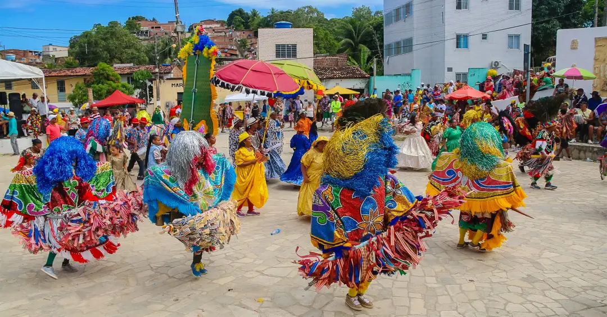

Bem-vindo ao mundo do Maracatu!
Maracatu é uma manifestação cultural brasileira de origem afro-indígena, típica do estado de **Pernambuco**, especialmente presente nas cidades de **Recife e Olinda**. Surgiu no período colonial e está ligada às celebrações religiosas, principalmente ao cortejo real do Congo, onde reis e rainhas negros eram coroados simbolicamente dentro das irmandades católicas.
Existem dois principais tipos de Maracatu:
Maracatu Nação (ou Maracatu de Baque Virado)– Mais tradicional, com forte influência africana, mistura música, dança e religiosidade afro-brasileira. É marcado pelo ritmo intenso dos tambores (alfaia, gonguê, caixa e agbê), e pelas fantasias luxuosas que representam a corte real. É ligado ao candomblé e ao culto aos orixás.

Maracatu Rural (ou Maracatu de Baque Solto)– Mais comum na zona da mata de Pernambuco, tem influência do carnaval rural. Seus personagens se vestem com roupas coloridas e chapéus enfeitados, e o ritmo é diferente, com presença de instrumentos como a zabumba e o pífano.
O Maracatu é uma expressão de resistência cultural e espiritual, e até hoje é uma parte importante das festividades do Carnaval em Pernambuco, além de ser reconhecido como um símbolo da identidade afro-brasileira.

O Maracatu é uma expressão de resistência cultural e espiritual, e até hoje é uma parte importante das festividades do Carnaval em Pernambuco, além de ser reconhecido como um símbolo da identidade afro-brasileira.